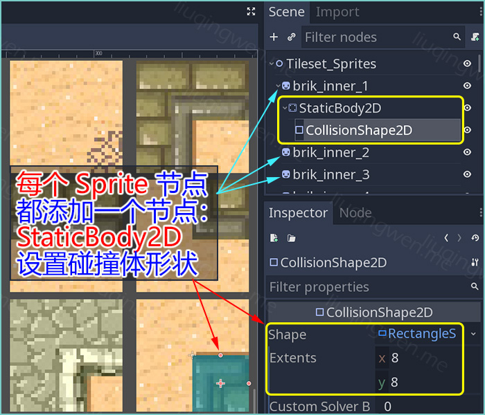
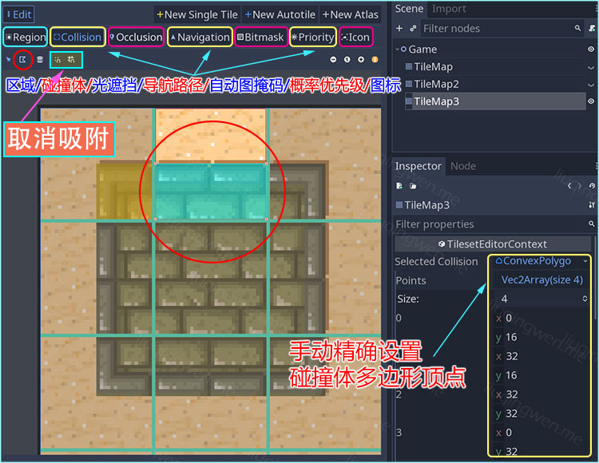
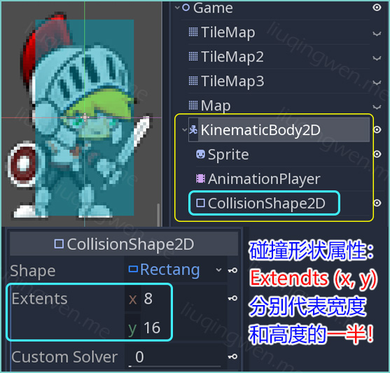
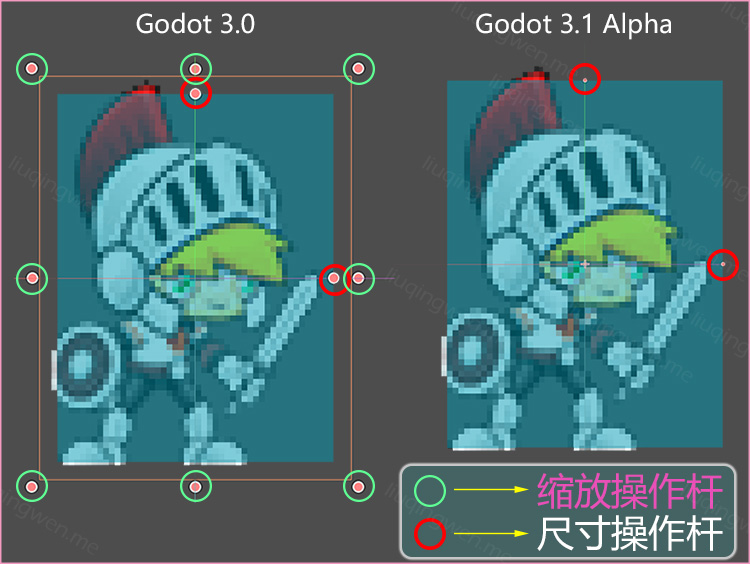
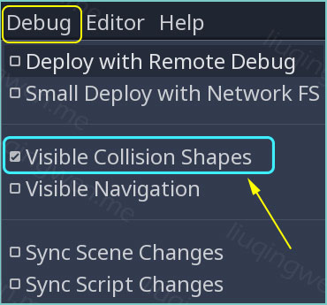
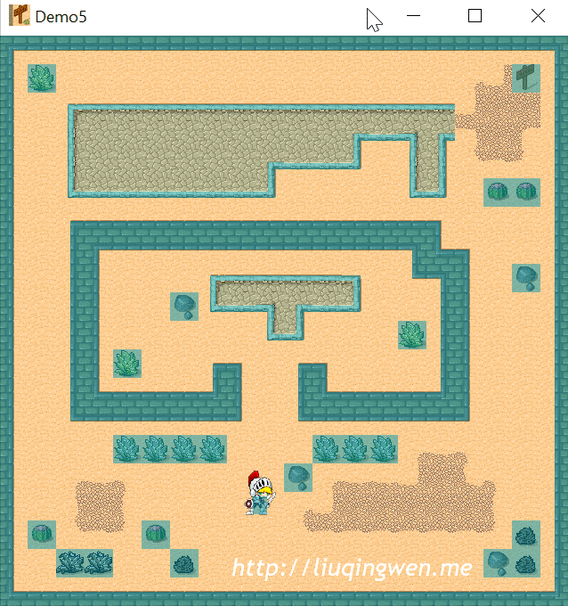

Godot3游戏引擎入门之七：地图添加碰撞体制作封闭的游戏世界

一、前言
在前面的文章中，我分别介绍了如何上下左右移动玩家，以及使用瓦片集制作丰富的游戏地图，现在，是时候结合在一起，制作一个简单的游戏世界了，这个游戏世界既有丰富的场景元素，也有合理的碰撞检测，玩家可以在封闭的世界里自由移动。
Godot3游戏引擎入门之五：上下左右移动动画（下）
Godot3游戏引擎入门之六：制作TileMap瓦片地图
上面的第一篇文章中，其实我们已经实现了一个简单的封闭世界，我们是这样实现碰撞检测的：给场景中的墙壁添加静态碰撞体，给玩家节点添加 RigidBody2D 刚体属性，我们在代码中设置玩家的线速度，而大部分物理属性由 Godot 引擎帮我们实现了。在第二篇文章中，我们又通过学习 TileSet 和 TileMap 可以在游戏中制作出复杂的场景，但问题是：地图上还缺少碰撞体，无法和玩家进行交互。
所以，这篇文章要解决上面两个小问题：第一，使用 KinematicBody2D 节点作为玩家对象，这样我们能自由控制物理反馈，实现相关的游戏功能；第二，我们需要给地图添加更多的真实的碰撞体，比如墙壁、障碍物等。这也是我们游戏开发的正常流程。
主要内容： 给 TileMap 地图添加碰撞体并测试
阅读时间： 4-6 分钟
永久链接：http://liuqingwen.me/blog/2018/10/22/introduction-of-godot-3-part-7-add-collision-and-move-player-in-map/
系列主页： http://liuqingwen.me/blog/introduction-of-godot-series/
二、正文
本篇目标
- 给地图中的瓦片添加碰撞体
- 玩家添加碰撞体，在地图中移动测试
- 学习几个实用的脚本函数
添加碰撞体
在上篇文章的基础上，我们需要给每一个瓦片添加上碰撞体，这个操作很简单，直接添加具有碰撞体功能的节点即可。在 Godot 3.1 新版本中，设置步骤稍微繁琐，但是效果更加直观，效率也会更高。两种方式我们都了解一下，具体操作方式可以根据你的 Godot 版本而定。
3.0 版本
首先打开我们之前保存过的用于创建 TileSet 资源的游戏场景文件（ Tileset_Sprites.tscn 和 Tileset_SpriteSheet.tscn ），然后直接给每一个节点添加碰撞体。场景中的 Sprite 节点最终都会转化为 Tile 瓦片，要给每个瓦片添加碰撞体，只需要在每个 Sprite 节点下添加一个 StaticBody2D 静态碰撞体作为子节点，然后给静态碰撞体添加 CollisionShape2D 节点并设置碰撞体形状即可。

这些都在前面的文章里已经详细介绍过了，不过要特别注意的是：给所有 Sprite 节点都添加了碰撞体后，必须重新保存以覆盖之前的 TileSet 资源，才能把碰撞体更新到地图中，否则设置了碰撞体也不会有效果。文章后面我会介绍 Godot 中强大的 Debug 功能对碰撞体进行可视化测试，避免意外情况。
3.1 版本
Godot 3.1 新版本关于 TileMap 的一些新特性上一篇文章已经介绍过了，基本流程类似：划分 Region 区域 -> 标记 Bitmask 掩码 -> 添加 Collision 碰撞体区域。新版本不需要添加任何子节点，直接在相应的瓦片上绘制碰撞体形状即可。如下图，相关参数上一篇文章已经介绍过了：

注：黄色代表已绘制的碰撞体，蓝色代表正在绘制的碰撞体。
操作提示：如果不方便设置自动吸附的参数，那么在绘制碰撞体形状的时候会出现很难精确点位的问题，这个时候我们可以取消吸附，选择粗略绘制完的碰撞体，点击 Points 属性值，对每一个点进行手动修改调整即可。
一般我们给墙壁和不可穿越物体设置碰撞体即可。设置完每一个瓦片集的碰撞体形状后，地图上就会出现相应的静态碰撞体了，新版本操作起来非常简单快捷！
添加主角
游戏世界里怎么能缺少玩家呢？老生常谈的话题，前面的文章已经多次介绍如何制作完整的 Player 玩家节点了，这里我们的地图是支持 Player 上下左右移动的，实现起来也不难，具体请参考上一篇文章的详细介绍：Godot3 游戏引擎入门之五：上下左右移动动画（下）。本次我们的主角 Player 主要有两种状态：静止（ idle ）和跑动（ run ），注意设置动画的总时长和开启循环播放。另外，由于原图稍大，不能直接放在地图中，我对玩家 Sprite 节点进行了缩放。

说明：和前面几篇文章不同的是，这里我使用了游戏中常用于制作玩家根节点的 KinematicBody2D 图形学节点作为 Player 对象的根节点，并添加一个 CollisionShape2D 节点作为碰撞体。这样做既能让 Player 参与物理响应，又能在代码中操作其移动。

另外有三个需要注意的地方：
- 第一个是碰撞体形状中的
Extends属性值表示半宽和半高，这和 Box2D 物理引擎一样 - 第二个是我们设置的碰撞体形状要比图片稍小，这样能防止意外碰撞，产生不必要的碰撞运算和效果
- 第三个，也是非常重要的一点：不要缩放碰撞体形状，即：不要设置
scale属性
第三点同样是为了防止产生意外碰撞情形，不过这点貌似在 Godot 3.1 版本中已经修正了：在绘制碰撞体图形时不能直接拖拽鼠标进行缩放碰撞体了：

准备工作已经完成，接下来就是最关键的部分：脚本代码了。
编写代码
给游戏场景的根节点 Game 添加一个 GDScript 脚本，参考前面学习到的知识， 代码量并不多，新的方法已经做了注释，全部的代码如下：
1 | extends Node2D |
新的关键词和脚本函数介绍；
export关键字修饰的变量能在编辑器的属性窗口中显示并设置值，类似 Unity 中的public/[Serialized]关键词flip_h布尔值表示图片是否水平翻转，产生向左或者向右的效果，相比使用scale缩放属性更加方便简洁move_and_collide(Vector2)这是本文 Demo 代码的精髓部分，传递一个速度矢量参数，游戏引擎将移动并处理物理碰撞，简洁又强大

效果调试
全部完成了，按 F5 运行游戏，测试我们的最终成果吧。感觉如何？反正我还是有点激动的，“尽情”探索一个“未知世界”吧：有围墙，有障碍物，有墙壁，各种地形等，如果在跑动过程发现有任何问题，别慌，你还可以对地图的所有碰撞体进行 Debug 调试！这也是 Godot 的强大功能之一，在 Debug 菜单下勾选 Visible Collision Shapes 选项即可开启！

开启碰撞调试后运行游戏的效果：

注意图中的蓝色形状体就是地图碰撞体，是不是和预期一样？调试的时候，我稍微放大了 Player 节点图片，测试的时候看得清楚些，如果你之前有多余的地图，那么场景中可能有多余的不可见的碰撞体存在，这样会影响游戏运行，避免的方法可以直接删除之前的 TileMap 测试地图，也可以在瓦片地图属性下对碰撞图层进行设置，取消碰撞图层和碰撞掩码即可，关于碰撞图层和掩码设置我在后面再讲，操作如下图：

确认场景没有问题后，关闭调试，运行游戏，享受一下自己的成果吧！ :smiley:

三、总结
本篇文章可以算是之前文章的一个结合，是不是感觉越来越简单了？开始动手实现自己的小游戏吧，骚年！不吹逼了，总结下本篇的知识点：
- Tile 瓦片碰撞体设置
- Debug 调试地图、玩家的碰撞体运行状态
- 几个有用的 GDScript 脚本代码技巧
我想，接下来给大家介绍一些游戏开发中常用的、实用的技巧，以及帮助大家提高效率，在强大开源的 Godot 游戏引擎中以正确的姿势开发 2D 小游戏！“静候佳音”吧，哈哈。嗯，还是那句话，原创不易，希望大家喜欢！ :smile:
我的博客地址： http://liuqingwen.me ，欢迎关注我的微信公众号：